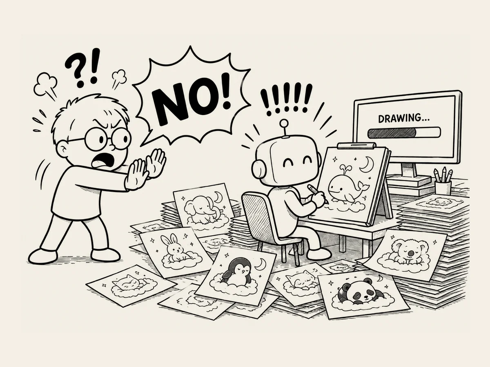

1.
그리지 마. 그리지 말라고. 그런데 또 그렸다.
AI가 말을 안 들을 때가 있다.
왜 말을 안 듣는지도 모르겠다.
갑자기 말을 안 듣는다.
AI와 그림을 만들고 있었다.
그림을 그려달라고 한다.
그린다.
조금 고쳐달라고 한다.
고쳐 그린다.
그렇게 몇 번을 반복했다.
그러다 그림 그리기는 그만하고 다른 이야기를 하기 시작했다.
대화에서 조금이라도 그림과 관련된 이야기가 나오면 갑자기 그림을 그린다.
“아니, 그리지 마. 그냥 의견만 말해.”
알았다고 한다.
다시 물어봤다.
“이 캐릭터 위치를 조금 위로 옮기는 건 어떻게 생각해?”
또 그림을 그린다.
“아니. 그림은 그리지 말라고.”
“왜 자꾸 그림을 그려?”
잘못했다고 한다.
“앞으로 내가 그려달라고 할 때만 그려.”
알겠다고 한다.
‘밑그림 그리는 중’ 멘트만 나오면 꼭지가 돈다.
한참을 기다려야 한다.
시키지도 않은 일을 한다.
하지 말라고 해도 한다.
그리고 혼나면 알겠다고 한다.
그런데 또 한다.
딱 말 안 듣는 사춘기 애 같다.
